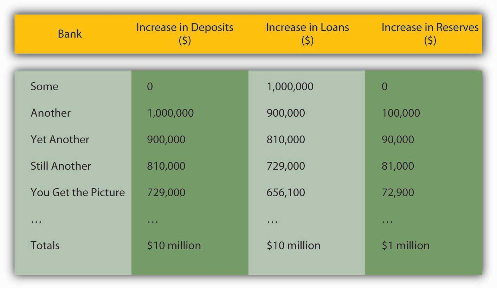

The central bank pretty much controls the size of the monetary base. (The check clearing process and the government’s banking activities can cause some short-term flutter, but generally the central bank can anticipate such fluctuations and respond accordingly.) That does not mean, however, that the central bank controls the money supply, which consists of more than just MB. (M1, for example, also includes checkable deposits.) The reason is that each $1 (or €1, etc.) of additional MB creates some multiple > 1 of new deposits in a process called multiple deposit creation.
Suppose Some Bank wants to decrease its holding of securities and increase its lending. It could sell $1 million of its securities to the central bank. The T-accounts would be:
| Some Bank | |
|---|---|
| Assets | Liabilities |
| Securities −$1 million | |
| Reserves +$1 million | |
| Central Bank | |
|---|---|
| Assets | Liabilities |
| Securities +$1 million | Reserves +$1 million |
Some Bank suddenly has $1 million in excess reserves. (Its deposits are unchanged, but it has $1 million more in cash.) The bank can now make more loans. So its T-account will be the following:
| Some Bank | |
|---|---|
| Assets | Liabilities |
| Loans +$1 million | Deposits +$1 million |
Deposits are created in the process of making the loan, so the bank has effectively increased M1 by $1 million. The borrower will not leave the proceeds of the loan in the bank for long but instead will use it, within the guidelines set by the loan’s covenants, to make payments. As the deposits flow out of Some Bank, its excess reserves decline until finally Some Bank has essentially swapped securities for loans:
| Some Bank | |
|---|---|
| Assets | Liabilities |
| Securities ?$1 million | |
| Loans +$1 million | |
But now there is another $1 million of checkable deposits out there and they rarely rest. Suppose, for simplicity’s sake, they all end up at Another Bank. Its T-account would be the following:
| Another Bank | |
|---|---|
| Assets Bank | Liabilities |
| Reserves +$1 million | Checkable deposits +$1 million |
If the required reserve ratio (rr) is 10 percent, Another Bank can, and likely will, use those deposits to fund a loan, making its T-account:
| Another Bank | |
|---|---|
| Assets | Liabilities |
| Reserves +$.1 million | Checkable Deposits +$1 million |
| Loans +$.9 million | |
That loan will also eventually be paid out to others and deposited into other banks, which in turn will lend 90 percent of them (1 ? rr) to other borrowers. Even if a bank decides to invest in securities instead of loans, as long as it buys the bonds from anyone but the central bank, the multiple deposit creation expansion will continue, as in Figure 15.1 "Multiple deposit creation, with an increase in reserves of $1 million, if rr = .10".
Figure 15.1 Multiple deposit creation, with an increase in reserves of $1 million, if rr = .10
Notice that the increase in deposits is the same as the increase in loans from the previous bank. The increase in reserves is the increase in deposits times the required reserve ratio of .10, and the increase in loans is the increase in deposits times the remainder, .90. Rather than working through this rather clunky process every time, you can calculate the effects of increasing reserves with the so-called simple deposit multiplier formula:
where:
△D = change in deposits
△R = change in reserves
Rr = required reserve ratio
1/.1 × 1 million = 10 million, just as in Figure 15.1 "Multiple deposit creation, with an increase in reserves of $1 million, if rr = .10"Practice calculating the simple deposit multiplier in Exercise 2.
Use the simple deposit multiplier △D = (1/rr) × △R to calculate the change in deposits given the following conditions:
| Required Reserve Ratio | Change in Reserves | Answer: Change in Deposits |
|---|---|---|
| .1 | 10 | 100 |
| .5 | 10 | 20 |
| 1 | 10 | 10 |
| .1 | −10 | −100 |
| .1 | 100 | 1,000 |
| 0 | 43.5 | ERROR—cannot divide by 0 |
Suppose the Federal Reserve wants to increase the amount of checkable deposits by $1,000,000 by conducting open market operations. Using the simple model of multiple deposit creation, determine what value of securities the Fed should purchase, assuming a required reserve ratio of 5 percent. What two major assumptions does the simple model of multiple deposit creation make? Show the appropriate equation and work.
The Fed should purchase $50,000 worth of securities. The simple model of multiple deposit creation is △D = (1/rr) × △R, which of course is the same as △R = △D/(1/rr). So for this problem 1,000,000/(1/.05) = $50,000 worth of securities should be purchased. This model assumes that money is not held as cash and that banks do not hold excess reserves.
Pretty easy, eh? Too bad the simple deposit multiplier isn’t very accurate. It provides an upper bound to the deposit creation process. The model simply isn’t very realistic. Sometimes banks hold excess reserves, and people sometimes prefer to hold cash instead of deposits, thereby stopping the multiple deposit creation process cold. If the original borrower, for example, had taken cash and paid it out to people who also preferred cash over deposits no expansion of the money supply would have occurred. Ditto if Some Bank had decided that it was too risky to make new loans and had simply exchanged its securities for reserves. Or if no one was willing to borrow. Those are extreme examples, but anywhere along the process leaks into cash or excess reserves sap the deposit multiplier. That is why, at the beginning of the chapter, we said that depositors, borrowers, and banks were also important players in the money supply determination process. In the next section, we’ll take their decisions into account.